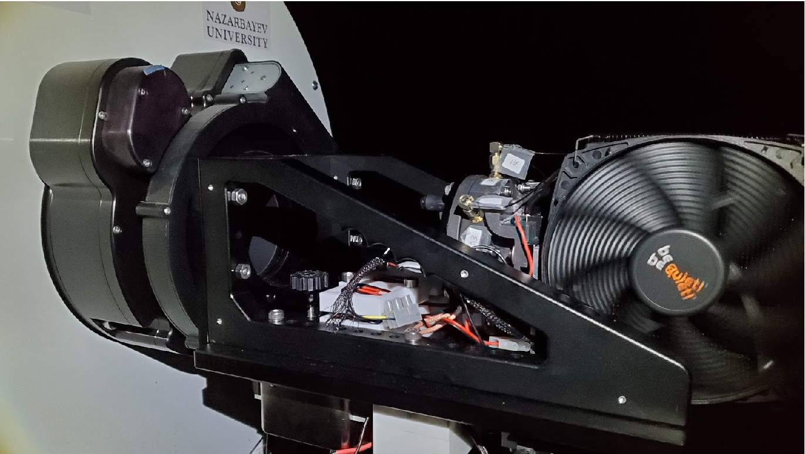
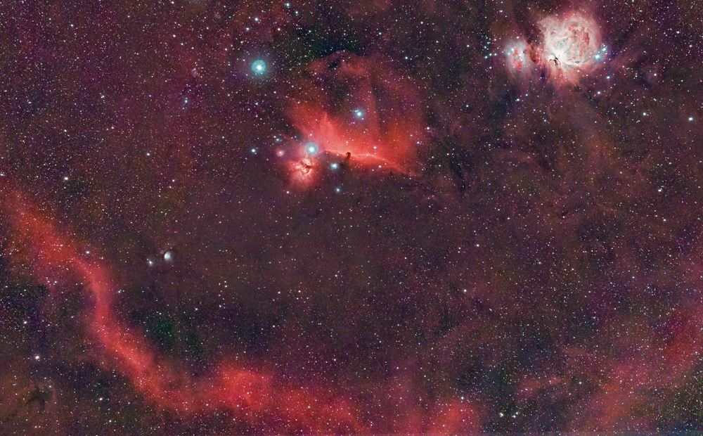
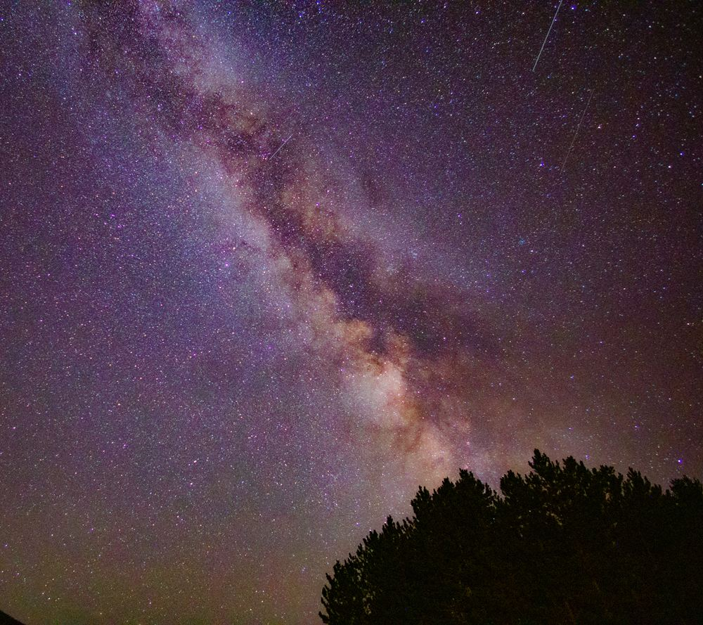

Dunlap Postdoctoral Fellow · University of Toronto
Albert Wai Kit Lau
I build instruments that observe the sky for transients in both radio and optical light.
The Milky Way, from my own camera
Research
I am an instrumental astronomer working on fast transients. My work connects radio-array electronics, fast optical detectors and the timing that lets the two observe together.

Radio · 300–1500 MHz
Radio-array instrumentation
I lead the analog signal chain and power distribution for CHORD, and antenna and analog-system development for CHARTS, a 256-element transient array at 300–500 MHz.
- CHORD
- CHARTS
- CHIME/FRB Outriggers
- Radio-over-fiber

Optical · ns to ms
Fast optical detectors
I designed, built and field-tested SPINA, a single-photon imager with about 8 ns timing, and I develop sCMOS electronics and FPGA firmware for the LUVCam space cameras.
- SPINA
- False-alarm statistics
- sCMOS
- LUVCam

Radio + optical
Observing both at once
At Gemini South I helped install the IQUEYE single-photon instrument and led simultaneous radio observations with the 46 m Algonquin telescope. SimpleClock supplies the shared timing.
- IQUEYE
- Algonquin 46 m
- SimpleClock
Recent highlights
- SimpleClock paper posted on arXiv and submitted to the Journal of Astronomical Instrumentation. The design is open source.
- Paper on the CHARTS differential active antenna and frequency-division multiplexing published at EuCAP 2026.
- Awarded a Blue-Sky Idea Grant by the Dunlap Institute.
- IQUEYE at Gemini South: optical pulsations detected from the Crab pulsar, with simultaneous radio coverage.
- Lectured and ran laboratories at the Dunlap Summer School.
- Young scientist at the Lindau Nobel Laureate Meeting.
Selected publications
- False alarm rate-based statistical detection limit for astronomical photon detectors JATIS 11(2), 028007 · 2025
- Differential Active Planar Antenna and Frequency-Division Multiplexing with Commercial Electronics for CHARTS Interferometer EuCAP · 2026
- CHIME/FRB Outriggers: Design Overview ApJ 993(1), 55 · 2025
- Developing a low-cost, compact radio-over-fiber (RFoF) linkage for radio telescope arrays Proc. SPIE 13096 · 2024
- Initial On-Sky Performance Testing of the Single-Photon Imager for Nanosecond Astrophysics (SPINA) System IEEE Trans. Instrum. Meas. 72 · 2023
About
I am a Dunlap Postdoctoral Fellow at the Dunlap Institute for Astronomy and Astrophysics, University of Toronto. I work on electronics, hardware and FPGA design for radio and optical telescopes, and I have mentored ten undergraduate and graduate researchers on these projects.
I received my Ph.D. in Physics from the Hong Kong University of Science and Technology in 2023, supervised by Prof. George F. Smoot and Prof. Kam-Biu Luk, after a B.Sc. there in Physics and Computer Science. Before my Ph.D. I co-founded Centauri Optics, a Hong Kong company that develops scientific educational products.
My interest in astronomy began in childhood, looking up at the night sky and wondering how everything works. I still take a telescope and camera out of the city whenever the sky is clear. Away from the telescope I hike, camp, windsurf and climb.




My own astrophotography. See the gallery →